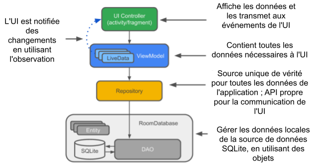

Ces travaux pratiques se base sur le cours de base pour les développeurs Android fourni par Google afin de les préparer pour le test de certification Associate Android Developer. Vous obtiendrez le plus de valeur de ce TP si vous travaillez successivement dans les codelabs.
Introduction
Le système d'exploitation Android fournit une base solide pour la création d'applications qui fonctionnent bien sur un large éventail d'appareils et de facteurs de forme. Cependant, des problèmes tels que des cycles de vie complexes et l'absence d'une architecture d'application recommandée rendent difficile l'écriture d'applications robustes. Les composants d'architecture Android fournissent des bibliothèques pour des tâches courantes telles que la gestion du cycle de vie et la persistance des données, afin de faciliter la mise en œuvre de l'architecture recommandée.
Les composants d'architecture vous aident à structurer votre application d'une manière robuste, testable et maintenable avec moins de code boilerplate.
Quels sont les composants d'architecture recommandés ?
Lorsqu'il s'agit d'architecture, il est utile de voir d'abord la vue d'ensemble. Pour introduire la terminologie, voici un bref aperçu des composants d'architecture et de la manière dont ils fonctionnent ensemble. Chaque composant est expliqué plus en détail lorsque vous l'utilisez dans ce cours pratique.
Le diagramme ci-dessous montre une forme de base de l'architecture recommandée pour les applications qui utilisent les composants d'architecture. L'architecture se compose d'un contrôleur d'interface utilisateur, d'un ViewModel qui fournit LiveData, d'un référentiel et d'une base de données Room. La base de données Room est basée sur une base de données SQLite et accessible via un objet d'accès aux données (DAO). Chaque composant est décrit brièvement ci-dessous. Vous implémentez les composants dans cette pratique.

Parce que tous les composants interagissent, vous rencontrerez des références à ces composants tout au long de ce guide pratique, voici donc une brève explication de chacun d'eux.
Entity (Entité) : Dans le contexte des composants d'architecture, l'entité est une classe annotée qui décrit une table de base de données.
Base de données
SQLite : Sur l'appareil, les données sont stockées dans une base de données SQLite. La bibliothèque de persistance Room crée et maintient cette base de données pour vous.
Base de données Room : Simplifie le travail de base de données et sert de point d'accès à la base de données SQLite sous-jacente (cache SQLiteOpenHelper). La base de données Room utilise le DAO pour émettre des requêtes vers les données SQLite.
DAO : Acronyme de Data Access Object, qui signifie objet d'accès aux données. Il s'agit d'un mappage de requêtes SQL en fonction. Auparavant, vous deviez définir ces requêtes dans une classe d'assistance. Lorsque vous utilisez un DAO, votre code appelle les fonctions, et les composants s'occupent du reste.
Repository : Une classe que vous créez pour gérer plusieurs sources de données. En plus d'une base de données Room, le Repository peut gérer des sources de données distantes telles qu'un serveur Web.
ViewModel: Fournit des données à l'interface utilisateur (UI) et agit comme un centre de communication entre le référentiel (Repository) et l'UI. Masque l'arrière-plan à l'UI. Les instances de ViewModel survivent aux changements de configuration de l'appareil.
LiveData: Une classe de conteneur de données qui suit le modèle d'observateur, ce qui signifie qu'elle peut être observée. Contient et met toujours en cache la dernière version des données. Notifie ses observateurs lorsque les données ont changé. En général, les composants de l'interface utilisateur observent les données pertinentes. LiveData est sensible au cycle de vie, elle gère donc automatiquement l'arrêt et la reprise de l'observation en fonction de l'état de l'activité ou du fragment qui l'observe.
What you should already know
Vous devez être familiarisé avec Java, les concepts de conception orientée objet et les fondamentaux du développement Android. En particulier :
RecyclerViewet adaptateurs- SQLite databases and the SQLite query language
- Multithreading et
ExecutorService
What you'll learn
- Comment concevoir et construire une application en utilisant certains des composants Android Architecture Components. Vous utiliserez
Room,ViewModeletLiveData.
What you'll do
- Créer une application avec une activité qui affiche une liste de mots dans un
RecyclerView. - Créer une entité (
Entity) qui représente les objets de mots. - Définir le mappage des requêtes
SQLaux méthodes Java dans unDAO(data access object). - Utiliser
LiveDatapour rendre les modifications apportées aux données visibles à l'interface utilisateur, par l'intermédiaire d'observateurs. - Ajouter une base de données
Roomà l'application pour persister les données localement, et initialiser la base de données. - Abstraire la couche de données sous la forme d'une classe
Repositoryavec une API qui est agnostique quant à la manière dont les données sont stockées ou acquises. - Utiliser un
ViewModelpour séparer toutes les opérations de données de l'interface utilisateur. - Ajouter une deuxième activité qui permet à l'utilisateur d'ajouter de nouveaux mots.
Dans ce cours pratique, vous allez créer une application qui utilise les composants d'architecture Android. L'application, appelée RoomWordsSample, stocke une liste de mots dans une base de données Room et affiche la liste dans un RecyclerView. L'application RoomWordsSample est basique, mais suffisamment complète pour que vous puissiez l'utiliser comme modèle de départ.
L'application RoomWordsSample fait ce qui suit :
- Fonctionne avec une base de données pour obtenir et enregistrer des mots, et pré remplit la base de données avec quelques mots.
- Affiche tous les mots dans une
RecyclerViewdans l'activité principale. - Ouvre une deuxième activité lorsque l'utilisateur appuie sur le bouton FAB
+. Lorsque l'utilisateur entre un mot, l'application l'ajoute à la base de données et la liste est automatiquement mise à jour.


Aperçu de l'architecture de RoomWordSample
Le diagramme suivant reprend le diagramme d'ensemble de l'introduction et montre toutes les pièces de l'application RoomWordsSample. Chacune des boîtes englobantes (à l'exception de la base de données SQLite) représente un composant de l'application qui peut être réutilisé par d'autres applications

1.1 Créer une application avec une seule activité
- Ouvrez Android Studio et cliquez sur New Project.
- Dans la fenêtre New Project, choisissez Basic Views Activity et cliquez sur Next.
- Sur l'écran suivant, nommez l'application RoomWordSample et cliquez sur Finish.
- Ouvrez
themes.xml, changez le parent de du thèmeBase.Theme.RoomWordSamplede l'application par Theme.Material3.Light.NoActionBar et supprimez le fichierthemes.xml (night).
C'est juste pour avoir la même interface utilisateur, parce que le mode sombre peut être activé sur vos émulateurs ou téléphones. - Supprimez le répertoire "navigation" sous les ressources (
res). - Supprimez toutes les mises en page et classes Java des fragments.
FirstFragment.java,SecondFragment.java,fragment_first.xmletfragment_second.xml. - Supprimez la balise
fragmentde "content_main.xml" . - Supprimez les dépendances de la bibliothèque de navigation et synchronisez le projet après la suppression.
implementation libs.navigation.fragment
implementation libs.navigation.ui- Nettoyez "
MainActivity.java" (les imports, methode de navigationonSupportNavigateUp()et tous les variables en rouge en relation avec la bibliothèque de navigation...) - Exécutez votre application.
1.2 Mettre à jour les fichiers Gradle
Ensuite, vous devez ajouter les bibliothèques de composants à vos fichiers Gradle.
- Dans Android Studio, cliquez sur l'onglet Projets et développez le dossier Gradle Scripts.
- Ouvrir
libs.versions.toml. - À la fin de la section
[versions], ajoutez les deux variables suivantes qui définissent les versions des bibliothèques "room" et "lifecycle" :
room = "2.6.1"
lifecycle = "2.8.6"- À la fin de la section
[libraries], ajoutez la définition des packages des deux bibliothèques ainsi que leurs versions respectives :
# Composant de base de données Room
room-runtime = { group = "androidx.room", name = "room-runtime", version.ref = "room" }
room-compiler = { group = "androidx.room", name = "room-compiler", version.ref = "room" }
room-testing = { group = "androidx.room", name = "room-testing", version.ref = "room" }
# Composants de cycle de vie
lifecycle-viewmodel = { group = "androidx.lifecycle", name = "lifecycle-viewmodel", version.ref = "lifecycle" }
lifecycle-livedata = { group = "androidx.lifecycle", name = "lifecycle-livedata", version.ref = "lifecycle" }
lifecycle-common-java8 = { group = "androidx.lifecycle", name = "lifecycle-common-java8", version.ref = "lifecycle" }- Ouvrir
build.gradle (Module: app). - Ajoutez le code suivant en bas du bloc des dépendances
dependencies(mais toujours à l'intérieur du bloc).
// Dépendances pour travailler avec les composants d'architecture
// Vous devrez probablement mettre à jour les numéros de version dans libs.versions.toml
// Composant de base de données Room
implementation libs.room.runtime
annotationProcessor libs.room.compiler
testImplementation libs.room.testing
// Composants de cycle de vie
implementation libs.lifecycle.viewmodel
implementation libs.lifecycle.livedata
implementation libs.lifecycle.common.java8- Synchronisez votre projet
Les données de cette application sont des mots, et vous aurez besoin d'une table simple pour stocker ces valeurs:
Les composants d'architecture vous permettent d'en créer un via une entité (Entity). Faisons-le maintenant.
2.1 Créer la classe Word
- Effectuez un clic droit sur app > java > com.example.enetcom.roomwordsample, puis sélectionnez New > Package.
- Saisissez
modelcomme dernière partie du nom du package. - Effectuez un clic droit sur le package
model, puis sélectionnez New > Java Class. - Saisissez
Wordcomme nom de classe. Cette classe décrira l'entité (qui représente la tableSQLite) pour vos mots. Chaque propriété de la classe représente une colonne de la table. Room utilisera ces propriétés pour créer la table et instancier des objets à partir de lignes de la base de données. Voici le code :
public class Word {
private String mWord;
public Word(@NonNull String word) {this.mWord = word;}
public String getWord(){return this.mWord;}
}2.2 Annoter la classe Word
Pour que la classe Word ait un sens pour une base de données Room, vous devez l'annoter. Les annotations identifient la manière dont chaque partie de cette classe se rapporte à une entrée dans la base de données. Room utilise ces informations pour générer du code.

Mettez à jour votre classe Word avec des annotations comme indiqué dans ce code :
@Entity(tableName = "word_table")
public class Word {
@PrimaryKey
@NonNull
@ColumnInfo(name = "word")
private String mWord;
public Word(@NonNull String word) {this.mWord = word;}
public String getWord(){return this.mWord;}
}Voyons ce que font ces annotations:
@Entity(tableName = "word_table")Chaque classe@Entityreprésente une table SQLite. Annotez la déclaration de votre classe pour indiquer qu'il s'agit d'une entité. Vous pouvez spécifier le nom de la table si vous souhaitez qu'il soit différent du nom de la classe. Cela nomme la table "word_table".@PrimaryKeyChaque entité a besoin d'une clé primaire. Pour simplifier les choses, chaque mot agit comme sa propre clé primaire.@NonNullIndique qu'un paramètre, un champ ou une valeur de retour de méthode ne peut jamais être nul.@ColumnInfo(name = "word")Spécifiez le nom de la colonne dans la table si vous souhaitez qu'il soit différent du nom de la variable membre.- Chaque champ stocké dans la base de données doit être public ou avoir une méthode "getter". Cet exemple fournit une méthode
getWord().
Vous trouver une liste complète des annotations dans la référence du package Room.
3.1 Qu'est-ce qu'une DAO ?
Un DAO (data access object) valide votre SQL à la compilation et l'associe à une méthode. Dans votre DAO Room, vous utilisez des annotations pratiques, comme @Insert, pour représenter les opérations de base de données les plus courantes ! Room utilise le DAO pour créer une API propre pour votre code.
Le DAO doit être une interface ou une classe abstraite. Par défaut, toutes les requêtes doivent être exécutées sur un thread distinct.
3.2 Créez une classe DAO
Écrivons un DAO qui fournit des requêtes pour :
- Obtenir tous les mots ordonnés par ordre alphabétique
- Insérer un mot
- Supprimer tous les mots
- Effectuez un clic droit sur app > java > com.example.enetcom.roomwordsample, puis sélectionnez New > Package.
- Saisissez
data.dbcomme dernière partie du nom du package. - Effectuez un clic droit sur le package
data.db, puis sélectionnez New > Java Class. - Saisissez
WordDaocomme nom et sélectionnez interface. - Copy and paste the following code into
WordDaoand fix the imports as necessary to make it compile:
@Dao
public interface WordDao {
// Permettre l'insertion du même mot plusieurs fois en passant
// une stratégie de résolution de conflits.
@Insert(onConflict = OnConflictStrategy.IGNORE)
void insert(Word word);
@Query("DELETE FROM word_table")
void deleteAll();
@Query("SELECT * FROM word_table ORDER BY word ASC")
List<Word> getAlphabetizedWords();
}Expliquons-le point par point:
WordDaoest une interface ; les DAO doivent être soit des interfaces, soit des classes abstraites.- L'annotation
@Daoidentifie une classe comme une classe DAO pour Room. void insert(Word word);Déclare une méthode pour insérer un mot:- L'annotation
@Insertest une annotation spéciale de méthode DAO qui vous permet d'insérer des données dans la base de données sans avoir à écrire de SQL ! (Il existe également des annotations@Deleteet@Updatepour supprimer et mettre à jour des lignes, mais vous ne les utilisez pas dans cette application.) onConflict = OnConflictStrategy.IGNORE: La stratégie de conflit sélectionnée ignore un nouveau mot s'il est exactement le même qu'un mot déjà présent dans la liste. Pour en savoir plus sur les stratégies de conflit disponibles, veuillez consulter la documentation.deleteAll(): déclare une méthode pour supprimer tous les mots.- Il n'y a pas d'annotation pratique pour supprimer plusieurs entités, donc elle est annotée avec l'annotation générique
@Query. @Query("DELETE FROM word_table"):@Queryrequiert que vous fournissiez une requête SQL en tant que paramètre de chaîne à l'annotation.List: Une méthode pour récupérer tous les mots et renvoyer une liste (getAlphabetizedWords() List) de mots (Word)@Query("SELECT * FROM word_table ORDER BY word ASC"): Renvoie une liste de mots triés par ordre croissant.
Lorsque les données changent, vous souhaitez généralement effectuer une action, telle que l'affichage des données mises à jour dans l'interface utilisateur. Cela signifie que vous devez observer les données afin de pouvoir réagir lorsqu'elles changent.
Selon la façon dont les données sont stockées, cela peut être délicat. L'observation des modifications apportées aux données dans plusieurs composants de votre application peut créer des chemins de dépendance explicites et rigides entre les composants. Cela rend les tests et le débogage difficiles, entre autres.
LiveData, une classe de bibliothèque de cycle de vie pour l'observation des données, résout ce problème. Utilisez une valeur de retour de type LiveData dans la description de votre méthode, et Room générera tout le code nécessaire pour mettre à jour LiveData lorsque la base de données est mise à jour.
4.1 Retourner LiveData dans WordDao
- Dans
WordDao, modifiez la signature de la méthodegetAlphabetizedWords()afin que laListrenvoyée soit encapsulée avecLiveData.
@Query("SELECT * from word_table ORDER BY word ASC")
LiveData<List<Word>> getAlphabetizedWords();Plus tard dans ce codelab, vous suivez les changements de données via un observateur (observer) dans MainActivity.
5.1 Qu'est-ce qu'une base de données Room ?
- Room est une couche de base de données au-dessus d'une base de données SQLite.
- Room s'occupe des tâches banales que vous aviez l'habitude de gérer avec un
SQLiteOpenHelper. - Room utilise le DAO pour émettre des requêtes vers sa base de données.
- Par défaut, pour éviter de dégrader les performances de l'interface utilisateur, Room ne vous permet pas d'émettre des requêtes sur le thread principal. Lorsque les requêtes Room renvoient des
LiveData, elles sont automatiquement exécutées de manière asynchrone sur un thread d'arrière-plan. - Room fournit des vérifications au moment de la compilation des déclarations SQLite.
5.2 Implémenter la base de données Room
Votre classe de base de données Room doit être abstraite et hériter de RoomDatabase. En général, vous n'avez besoin que d'une seule instance d'une base de données Room pour toute l'application.
Créons-en un maintenant. Créez un fichier de classe appelé WordRoomDatabase sous le package db et ajoutez-y le code suivant :
@Database(entities = {Word.class}, version = 1, exportSchema = false)
public abstract class WordRoomDatabase extends RoomDatabase {
public abstract WordDao wordDao();
private static volatile WordRoomDatabase INSTANCE;
private static final int NUMBER_OF_THREADS = 4;
public static final ExecutorService databaseWriteExecutor =
Executors.newFixedThreadPool(NUMBER_OF_THREADS);
public static WordRoomDatabase getDatabase(final Context context) {
if (INSTANCE == null) {
synchronized (WordRoomDatabase.class) {
if (INSTANCE == null) {
INSTANCE = Room.databaseBuilder(context.getApplicationContext(),
WordRoomDatabase.class, "word_database")
.fallbackToDestructiveMigration()
.build();
}
}
}
return INSTANCE;
}
}Parcourons le code ensemble:
- La classe de base de données pour Room doit être abstraite (
abstract) et étendreRoomDatabase. - Vous annotez la classe pour qu'elle soit une base de données Room avec
@Databaseet utilisez les paramètres d'annotation pour déclarer les entités qui appartiennent à la base de données et définir le numéro de version. Chaque entité correspond à une table qui sera créée dans la base de données. Les migrations de base de données sont hors du champ d'application de ce codelab, nous définissons doncexportSchemaàfalseici pour éviter un avertissement de compilation. Dans une application réelle, vous devriez envisager de définir un répertoire que Room utilisera pour exporter le schéma afin que vous puissiez vérifier le schéma actuel dans votre système de contrôle de version. - La base de données expose des DAO via une méthode "getter" abstraite pour chaque @Dao.
- Nous avons défini un singleton,
WordRoomDatabase, pour empêcher l'ouverture de plusieurs instances de la base de données en même temps. getDatabaserenvoie le singleton. Il créera la base de données la première fois qu'elle sera accédée, en utilisant le générateur de base de données de Room pour créer un objetRoomDatabasedans le contexte de l'application à partir de la classeWordRoomDatabaseet le nommer"word_database".- Nous avons créé un
ExecutorServiceavec un pool de threads fixe que vous utiliserez pour exécuter les opérations de base de données de manière asynchrone sur un thread d'arrière-plan.
6.1 Qu'est-ce qu'une classe Repository ?
Une classe Repository est une abstraction qui permet d'accéder à plusieurs sources de données. La classe Repository ne fait pas partie des bibliothèques Architecture Components, mais elle est suggérée comme bonne pratique pour la séparation du code et l'architecture. Une classe Repository fournit une API propre pour l'accès aux données au reste de l'application.
6.2 Pourquoi utiliser une classe Repository ?
Un référentiel (Repository) gère les requêtes et vous permet d'utiliser plusieurs bases de données. Dans l'exemple le plus courant, le référentiel implémente la logique permettant de décider s'il faut récupérer les données d'un réseau ou utiliser les résultats mis en cache dans une base de données locale.
6.3 Implémenter la classe Repository
- Créer une classe publique appelée
WordRepositorysous le packagecom.example.enetcom.roomwordsample - Effectuez un clic droit sur la classe
WordRepository, puis sélectionnezRefactor > move classpour la déplacer sous le packagedata - Ajoutez le code suivant
public class WordRepository {
private final WordDao mWordDao;
private final LiveData<List<Word>> mAllWords;
public WordRepository(Application application) {
WordRoomDatabase db = WordRoomDatabase.getDatabase(application);
mWordDao = db.wordDao();
mAllWords = mWordDao.getAlphabetizedWords();
}
// Room exécute toutes les requêtes sur un thread distinct.
// Les données LiveData observées avertiront l'observateur lorsque les données auront changé.
public LiveData<List<Word>> getAllWords() {
return mAllWords;
}
// Vous devez appeler cela sur un thread non-UI ou votre application lancera une exception.
// Room garantit que vous n'effectuez aucune opération longue sur le thread principal, bloquant l'interface utilisateur.
public void insert(Word word) {
WordRoomDatabase.databaseWriteExecutor.execute(() -> mWordDao.insert(word));
}
}- Le DAO est passé au constructeur du dépôt au lieu de l'ensemble de la base de données. En effet, vous n'avez besoin d'accéder qu'au DAO, car il contient toutes les méthodes de lecture et d'écriture pour la base de données. Il n'est pas nécessaire d'exposer l'ensemble de la base de données au dépôt.
- La méthode
getAllWordsrenvoie la listeLiveDatade mots de Room. Nous pouvons le faire en raison de la manière dont nous avons défini la méthodegetAlphabetizedWordspour renvoyerLiveDataà l'étape "La classe LiveData". Room exécute toutes les requêtes sur un thread séparé. Ensuite,LiveDataobservé avertira l'observateur sur le thread principal lorsque les données auront changé. - Nous devons éviter d'exécuter l'insertion sur le thread principal, nous utilisons donc l'
ExecutorServiceque nous avons créé dansWordRoomDatabasepour effectuer l'insertion sur un thread d'arrière-plan.
7.1 Qu'est-ce qu'un ViewModel ?
Le rôle de la ViewModel est de fournir des données à l'interface utilisateur et de survivre aux changements de configuration. Une ViewModel agit comme un centre de communication entre le Repository et l'interface utilisateur. Vous pouvez également utiliser une ViewModel pour partager des données entre des fragments. La ViewModel est une partie de la bibliothèque Lifecycle.


Pour une introduction à ce sujet, consultez ViewModel Overview ou le billet de blog ViewModels: A Simple Example.
7.2 Pourquoi utiliser un ViewModel ?
Un ViewModel conserve les données de l'interface utilisateur de votre application de manière consciente du cycle de vie, ce qui leur permet de survivre aux changements de configuration. Séparer les données de l'interface utilisateur de votre application de vos classes Activity et Fragment vous permet de mieux suivre le principe de responsabilité unique : vos activités et fragments sont responsables de l'affichage des données à l'écran, tandis que votre ViewModel peut s'occuper de conserver et de traiter toutes les données nécessaires à l'interface utilisateur.
Dans le ViewModel, utilisez LiveData pour les données modifiables que l'interface utilisateur utilisera ou affichera. L'utilisation de LiveData présente plusieurs avantages :
- Vous pouvez utiliser un observateur sur les données (au lieu de les interroger régulièrement) et mettre à jour l'interface utilisateur uniquement lorsque les données changent réellement.
- Le référentiel (Repository) et l'interface utilisateur sont complètement séparés par le
ViewModel. - Il n'y a pas d'appels à la base de données depuis le
ViewModel(tout cela est géré dans le référentiel), ce qui rend le code plus testable.
7.3 Implémenter le ViewModel
Créez un fichier de classe pour WordViewModel sous le package com.example.enetcom.roomwordsample et ajoutez-y ce code :
public class WordViewModel extends AndroidViewModel {
private final WordRepository mRepository;
private final LiveData<List<Word>> mAllWords;
public WordViewModel (Application application) {
super(application);
mRepository = new WordRepository(application);
mAllWords = mRepository.getAllWords();
}
LiveData<List<Word>> getAllWords() { return mAllWords; }
public void insert(Word word) { mRepository.insert(word); }
}Ici, nous avons:
- Créé une classe appelée
WordViewModelqui prend l'application comme paramètre et étendAndroidViewModel. - Ajouté une variable membre privée pour conserver une référence au dépôt.
- Ajouté une méthode
getAllWords()pour renvoyer une liste de mots en cache. - Implémenté un constructeur qui crée le
WordRepository. - Dans le constructeur, initialisé le LiveData
allWordsen utilisant le dépôt. - Créé une méthode wrapper
insert()qui appelle la méthodeinsert()du dépôt. De cette façon, l'implémentation deinsert()est encapsulée de l'interface utilisateur.
Ensuite, vous devez ajouter la mise en page XML pour la liste et les éléments.
Ce codelab suppose que vous êtes familier avec la création de mises en page en XML, nous vous fournissons donc simplement le code.
8.1 Ajouter des styles
Ajouter un style pour les vues de texte dans le fichier values/styles.xml
<style name="word_title">
<item name="android:layout_width">match_parent</item>
<item name="android:layout_height">wrap_content</item>
<item name="android:layout_marginBottom">8dp</item>
<item name="android:padding">16dp</item>
<item name="android:layout_gravity">center</item>
<item name="android:background">@android:color/holo_orange_light</item>
<item name="android:textAppearance">@android:style/TextAppearance.Large</item>
</style>8.2 Ajouter la mise en page (layout) d'un élément
Ajoutez une mise en page layout/recyclerview_item.xml
<?xml version="1.0" encoding="utf-8"?>
<LinearLayout xmlns:android="http://schemas.android.com/apk/res/android"
android:orientation="vertical"
android:layout_width="match_parent"
android:layout_height="wrap_content">
<TextView
android:id="@+id/textView"
style="@style/word_title" />
</LinearLayout>8.3 Ajouter le RecyclerView
Ajoutez un élément RecyclerView au fichier layout/content_main.xml
<?xml version="1.0" encoding="utf-8"?>
<androidx.constraintlayout.widget.ConstraintLayout xmlns:android="http://schemas.android.com/apk/res/android"
xmlns:app="http://schemas.android.com/apk/res-auto" xmlns:tools="http://schemas.android.com/tools"
android:layout_width="match_parent"
android:layout_height="match_parent"
app:layout_behavior="@string/appbar_scrolling_view_behavior">
<androidx.recyclerview.widget.RecyclerView
android:id="@+id/recyclerview"
android:layout_width="0dp"
android:layout_height="0dp"
android:padding="16dp"
app:layout_constraintBottom_toBottomOf="parent"
app:layout_constraintLeft_toLeftOf="parent"
app:layout_constraintRight_toRightOf="parent"
app:layout_constraintTop_toTopOf="parent"
tools:listitem="@layout/recyclerview_item"
app:layoutManager="androidx.recyclerview.widget.LinearLayoutManager"
android:scrollbars="vertical"/>
</androidx.constraintlayout.widget.ConstraintLayout>8.4 Changer l'icône du FAB
L'apparence du bouton d'action flottant (FAB) doit correspondre à l'action disponible, nous allons donc remplacer l'icône par un symbole +.
Tout d'abord, nous devons ajouter un nouvel asset vectoriel.First, we need to add a new Vector Asset:
- Selectionnez File > New > Vector Asset.
- Cliquez sur l'icône du robot Android dans
Icon. - Recherchez
"add"et sélectionnez l'élément"+". Cliquez sur OK. - Après cela, cliquez sur Next.
- Confirmer le chemin de l'icône comme main > drawable et cliquer sur Finish pour ajouter l'asset.
- Toujours dans
layout/activity_main.xml, mettez à jour le FAB pour inclure le nouveau icône :
<com.google.android.material.floatingactionbutton.FloatingActionButton
android:id="@+id/fab"
android:layout_width="wrap_content"
android:layout_height="wrap_content"
android:layout_gravity="bottom|end"
android:layout_marginEnd="@dimen/fab_margin"
android:layout_marginBottom="16dp"
app:srcCompat="@drawable/baseline_add_24" />Vous allez afficher les données dans un RecyclerView, ce qui est un peu plus agréable que de simplement les jeter dans un TextView. Ce codelab suppose que vous savez comment fonctionnent RecyclerView, RecyclerView.ViewHolder et RecyclerView.Adapter.
9.1 Create the WordListAdapter class
Créez une classe WordListAdapter qui étend RecyclerView.Adapter sous le package "adapter" (com.example.enetcom.roomwordsample.adapter). Voici le code :
public class WordListAdapter extends RecyclerView.Adapter<WordListAdapter.WordViewHolder> {
private List<Word> mWords; // Copie en cache des mots
public WordListAdapter() {}
@NonNull
@Override
public WordViewHolder onCreateViewHolder(ViewGroup parent, int viewType) {
View itemView = LayoutInflater.from(parent.getContext()).inflate(R.layout.recyclerview_item, parent, false);
return new WordViewHolder(itemView);
}
@Override
public void onBindViewHolder(@NonNull WordViewHolder holder, int position) {
if (mWords != null) {
Word current = mWords.get(position);
holder.wordItemView.setText(current.getWord());
} else {
// Couvre le cas où les données ne sont pas encore prêtes.
holder.wordItemView.setText("No Word");
}
}
public void setWords(List<Word> words){
mWords = words;
notifyDataSetChanged();
}
// getItemCount() est appelé plusieurs fois, et lorsqu'il est appelé pour la première fois,
// mWords n'a pas été mis à jour (cela signifie qu'initialement, il est nul, et nous ne pouvons pas retourner nul).
@Override
public int getItemCount() {
if (mWords != null)
return mWords.size();
else return 0;
}
class WordViewHolder extends RecyclerView.ViewHolder {
private final TextView wordItemView;
private WordViewHolder(View itemView) {
super(itemView);
wordItemView = itemView.findViewById(R.id.textView);
}
}
}9.2 Ajouter RecyclerView à l'activité principale
- Allez dans
activity_main.xmlet localisez la baliseinclude, puis ajoutez-luicontent_maincomme unID:
<include layout="@layout/content_main" android:id="@+id/content_main" />- Ajoutez le
RecyclerViewdans la méthodeonCreate()deMainActivity. (après l'appel verssetContentView(binding.getRoot());)
WordListAdapter mAdapter = new WordListAdapter();
binding.contentMain.recyclerview.setAdapter(mAdapter);
binding.contentMain.recyclerview.setHasFixedSize(true);- Exécutez votre application pour vous assurer que tout fonctionne. Il n'y a pas d'éléments car vous n'avez pas encore connecté les données.

Il n'y a pas de données dans la base de données. Vous pouvez ajouter des données de deux manières : en ajoutant des données lors de l'ouverture de la base de données ou en ajoutant une activité pour ajouter des mots.
Pour supprimer tout le contenu et remplir la base de données lors de l'installation de l'application, vous créez un RoomDatabase.Callback et remplacez la méthode onCreate().
Voici le code pour créer le rappel dans la classe WordRoomDatabase. Comme vous ne pouvez pas effectuer d'opérations sur la base de données Room sur le thread de l'interface utilisateur, onCreate() utilise l'executor databaseWriteExecutor défini précédemment pour exécuter un lambda sur un thread d'arrière-plan. Le lambda supprime le contenu de la base de données, puis la remplit avec les deux mots "Hello" et "World". N'hésitez pas à ajouter d'autres mots !
private static RoomDatabase.Callback sRoomDatabaseCallback = new RoomDatabase.Callback() {
@Override
public void onOpen(@NonNull SupportSQLiteDatabase db) {
super.onOpen(db);
// Si vous souhaitez conserver les données au redémarrage de l'application
// commentez le bloc suivant
databaseWriteExecutor.execute(() -> {
// Remplir la base de données en arrière-plan
// Si vous voulez commencer avec plus de mots, il suffit de les ajouter.
WordDao dao = INSTANCE.wordDao();
dao.deleteAll();
Word word = new Word("Hello");
dao.insert(word);
word = new Word("World");
dao.insert(word);
});
}
};Ensuite, ajoutez le callback à la séquence de construction de la base de données juste avant d'appeler .build() sur Room.databaseBuilder()
.addCallback(sRoomDatabaseCallback)Maintenant que vous avez créé la méthode pour remplir la base de données avec l'ensemble initial de mots, l'étape suivante consiste à ajouter le code pour afficher ces mots dans le RecyclerView.
Pour afficher le contenu actuel de la base de données, ajoutez un observateur qui observe les LiveData dans le ViewModel.
Chaque fois que les données changent, la méthode de rappel onChanged() est invoquée. Cette méthode appelle la méthode setWords() de l'adaptateur pour mettre à jour les données mises en cache de l'adaptateur et rafraîchir la liste affichée.
- Dans
MainActivity, créez une variable membre pour leViewModel.
private WordViewModel mWordViewModel;Utilisez ViewModelProvider pour associer votre ViewModel à votre activité.
Lorsque votre activité est lancée pour la première fois, ViewModelProviders crée le ViewModel. Lorsque l'activité est détruite, par exemple lors d'un changement de configuration, le ViewModel persiste. Lorsque l'activité est recréée, ViewModelProviders renvoie le ViewModel existant. Pour plus d'informations, consultez ViewModel.
- Dans
onCreate(), sous le bloc de codeRecyclerView, obtenez unViewModelà partir duViewModelProvider:
mWordViewModel = new ViewModelProvider(this).get(WordViewModel.class);- Également dans
onCreate(), ajoutez un observateur pour leLiveDataretourné pargetAlphabetizedWords(). La méthodeonChanged()est déclenchée lorsque les données observées changent et que l'activité est au premier plan.
mWordViewModel = new ViewModelProvider(this).get(WordViewModel.class);
mWordViewModel.getAllWords().observe(this, words -> {
// Mettre à jour la copie en cache des mots dans l'adaptateur.
mAdapter.setWords(words);
});- Exécutez l'application. L'ensemble initial de mots "Hello" et " World" apparaît dans le
RecyclerView.
Vous allez maintenant ajouter une activité qui permet à l'utilisateur d'utiliser le FAB pour saisir de nouveaux mots.
12.1 Créer l'activité NewWordActivity
- Ajoutez ces ressources de chaîne dans
values/strings.xml:
<string name="hint_word">Word...</string>
<string name="button_save">Save</string>
<string name="empty_not_saved">Word not saved because it is empty.</string>- Ajoutez un style aux boutons dans
values/styles.xml:
<style name="button_style" parent="Widget.Material3.Button">
<item name="android:layout_width">match_parent</item>
<item name="android:layout_height">wrap_content</item>
<item name="android:textAppearance">@android:style/TextAppearance.Large</item>
<item name="android:layout_marginTop">16dp</item>
</style>- Ajoutez un style, pour le thème de la nouvelle activitée que vous allez la créer par la suite, dans
values/themes.xml:
<style name="Theme.RoomWordSample.WithActionBar" parent="Base.Theme.RoomWordSample" >
<item name="windowActionBar">true</item>
<item name="windowNoTitle">false</item>
<item name="toolbarStyle">@style/Widget.Material3.Toolbar.Surface</item>
</style>- Utilisez le modèle
Empty Views Activitypour créer une nouvelle activité,NewWordActivity. Vérifiez que l'activité a été ajoutée au manifeste Android.
<activity
android:name=".NewWordActivity"
android:exported="false" />- Appliquez le nouveau thème
Theme.RoomWordSample.WithActionBarà la nouvelle activité et spécifiezMainActivitycomme son parent.
<activity
android:name=".NewWordActivity"
android:theme="@style/Theme.RoomWordSample.WithActionBar"
android:parentActivityName=".MainActivity"
android:exported="false" />- Mettez à jour le fichier
activity_new_word.xmldans le dossier layout avec le code suivant :
<LinearLayout xmlns:android="http://schemas.android.com/apk/res/android"
xmlns:app="http://schemas.android.com/apk/res-auto"
xmlns:tools="http://schemas.android.com/tools"
android:layout_width="match_parent"
android:layout_height="match_parent"
android:orientation="vertical"
android:padding="32dp"
tools:context=".NewWordActivity">
<EditText
android:id="@+id/edit_word"
style="@style/word_title"
android:hint="@string/hint_word"
android:inputType="textAutoComplete" />
<Button
android:id="@+id/button_save"
android:text="@string/button_save"
style="@style/button_style"/>
</LinearLayout>- Implémentez la classe
NewWordActivitysous le même package queMainActivity. L'objectif est que lorsque l'utilisateur appuie sur le boutonSave, le nouveau mot soit placé dans unIntentpour être renvoyé à l'activité principale. Voici le code de l'activitéNewWordActivity:
public class NewWordActivity extends AppCompatActivity {
public static final String EXTRA_REPLY = "unique.key.for.REPLY";
private EditText mEditWordView;
@Override
protected void onCreate(Bundle savedInstanceState) {
super.onCreate(savedInstanceState);
setContentView(R.layout.activity_new_word);
mEditWordView = findViewById(R.id.edit_word);
final Button button = findViewById(R.id.button_save);
button.setOnClickListener(new View.OnClickListener() {
public void onClick(View view) {
Intent replyIntent = new Intent();
if (TextUtils.isEmpty(mEditWordView.getText())) {
setResult(RESULT_CANCELED, replyIntent);
} else {
String word = mEditWordView.getText().toString();
replyIntent.putExtra(EXTRA_REPLY, word);
setResult(RESULT_OK, replyIntent);
}
finish();
}
});
}
}12.2 Ajouter du code pour insérer un mot dans la base de données
- Définir un code de demande en tant que membre de la
MainActivity.
public static final int NEW_WORD_ACTIVITY_REQUEST_CODE = 1;- Dans
MainActivity, ajoutez le rappelonActivityResult()pourNewWordActivity. Si l'activité retourne avecRESULT_OK, insérez le mot retourné dans la base de données en appelant la méthodeinsert()deWordViewModel.
protected void onActivityResult(int requestCode, int resultCode, @Nullable Intent data) {
super.onActivityResult(requestCode, resultCode, data);
if (requestCode == NEW_WORD_ACTIVITY_REQUEST_CODE && resultCode == RESULT_OK) {
Word word = new Word(data.getStringExtra(NewWordActivity.EXTRA_REPLY));
mWordViewModel.insert(word);
} else {
Toast.makeText(
getApplicationContext(),
R.string.empty_not_saved,
Toast.LENGTH_LONG).show();
}
}- Dans
MainActivity, démarrezNewWordActivitylorsque l'utilisateur appuie sur le FAB. Dans la méthodeonCreate()deMainActivity, recherchez le FAB et remplacez le code deonClick()avec le code suivant :
binding.fab.setOnClickListener(new View.OnClickListener() {
@Override
public void onClick(View view) {
Intent intent = new Intent(MainActivity.this, NewWordActivity.class);
startActivityForResult(intent, NEW_WORD_ACTIVITY_REQUEST_CODE);
}
});- Maintenant, lancez votre application ! Lorsque vous ajoutez un mot à la base de données dans NewWordActivity, l'interface utilisateur se met automatiquement à jour.
Maintenant que vous avez une application fonctionnelle, résumons ce que vous avez construit. Voici à nouveau la structure de l'application, depuis le début :
- Vous avez une application qui affiche des mots dans une liste (
MainActivity,RecyclerView,WordListAdapter). - Vous pouvez ajouter des mots à la liste (
NewWordActivity). - Un mot est une instance de la classe d'entité
Word. - Les mots sont mis en cache dans le
WordListAdaptersous la forme d'une liste de mots (mWords). La liste est automatiquement mise à jour et affichée à nouveau lorsque les données changent. - La mise à jour automatique se produit car dans la
MainActivity, il y a unObserverqui observe les mots et est notifié lorsque les mots changent. Lorsqu'il y a un changement, la méthodeonChange()de l'observateur est exécutée et met à jourmWordsdans leWordListAdapter. - Les données peuvent être observées car il s'agit de
LiveData. Et ce qui est observé est leLiveDataqui est retourné par l'objetWordViewModel. - Le WordViewModel masque tout ce qui concerne le backend à l'interface utilisateur. Il fournit des méthodes d'accès aux données de l'interface utilisateur et renvoie
LiveDataafin queMainActivitypuisse configurer la relation d'observateur. Les vues, les activités et les fragments interagissent uniquement avec les données via leViewModel. En tant que tel, peu importe d'où viennent les données. - Dans ce cas, les données proviennent d'un
Repository. LeViewModeln'a pas besoin de savoir avec quelRepositoryinteragit. Il a juste besoin de savoir comment interagir avec leRepository, ce qui se fait par le biais des méthodes exposées par leRepository. - Le
Repositorygère une ou plusieurs sources de données. Dans l'applicationRoomWordsSample, ce backend est une base de données Room. Room est une couche autour d'une base de données SQLite et l'implémenter. Room fait beaucoup de travail pour vous que vous deviez faire vous-même auparavant. Par exemple, Room fait tout ce que vous deviez faire avec une classeSQLiteOpenHelper. - Le
DAOmappe les appels de méthode à des requêtes de base de données, de sorte que lorsque le Repository appelle une méthode telle quegetAllWords(), Room peut exécuterSELECT * from word_table ORDER BY word ASC. - Le résultat renvoyé par la requête est un
LiveDataobservé. Par conséquent, chaque fois que les données dans Room changent, la méthodeonChanged()de l'interfaceObserverest exécutée et l'interface utilisateur est mise à jour.
Pour continuer à travailler avec l'application RoomWordsSample et apprendre d'autres façons d'utiliser une base de données Room, consultez le codelab 4.2B : Suppression de données d'une base de données Room, qui reprend là où ce codelab s'arrête.
Documentation pour développeurs Android
- Guide to App Architecture
- Adding Components to your Project
- DAO
- Room DAOs
- Room package summary reference
- Handling Lifecycles with Lifecycle-Aware Components
LiveDataMutableLiveDataViewModelViewModelProviders- Defining data using Room entities
Blogs et articles:
- 7 Steps To Room (migrer une application existante)
- Understanding migrations with Room
- Lifecycle Aware Data Loading with Architecture Components
Codelabs:
- Android Persistence codelab (
LiveData, Room, DAO) - Android lifecycle-aware components codelab (
ViewModel,LiveData,LifecycleOwner,LifecycleRegistryOwner)
Vidéos:
- Architecture Components
- Architecture Components: LiveData and Lifecycle
- Architecture Components: ViewModel
Échantillons de code:
- Architecture Components code samples
- BasicSample (un échantillon pas si basique mais complet)